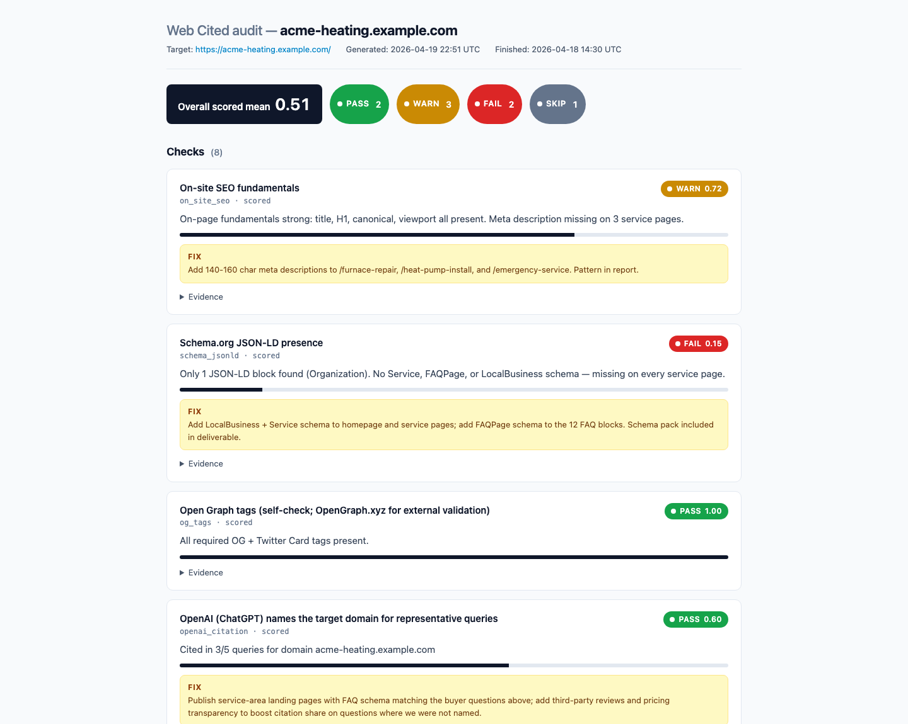
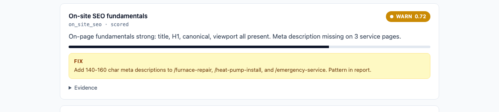
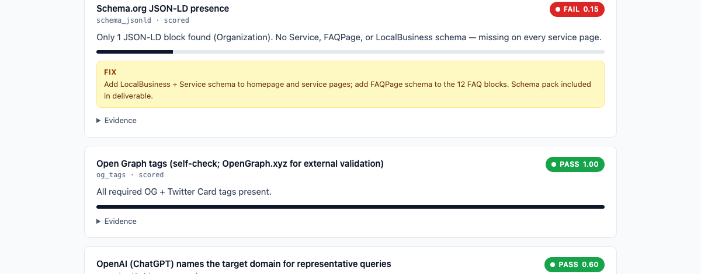

Classic Search
Crawlability, indexation, Core Web Vitals, internal linking, keyword coverage, title/meta hygiene, schema markup, and E-E-A-T signals.
ONE-TIME · 7 BUSINESS DAYS · ASYNC
A focused generative-engine visibility check. Single brand, 10 priority buyer questions, four LLM engines (ChatGPT, Perplexity, Gemini, Claude). Citation-share scorecard plus paste-ready schema for three priority pages.
ONE-TIME · 10 BUSINESS DAYS · ASYNC
The flagship. A comprehensive, actionable, sitewide audit of how humans, search engines, and AI models find, quote, and cite your business - paired with a ticket-ready fix backlog and a per-page schema pack.
Crawlability, indexation, Core Web Vitals, internal linking, keyword coverage, title/meta hygiene, schema markup, and E-E-A-T signals.
Featured snippet eligibility, People-Also-Ask coverage, structured Q&A content, voice-search readiness, and Google AI Overview presence.
Citation share across ChatGPT, Perplexity, Gemini, and Claude for your priority prompts. Source-page analysis so you know why you were cited (or not).
Reddit, YouTube, Wikipedia, Google Knowledge Graph, Wikidata, and Google Business Profile: the off-site pages and records that LLMs and answer engines quote when they write their answers.
<script type="application/ld+json"> blocks tailored to each priority page's content type - pre-validated against Schema.org and Google's Rich Results Test.ONE-TIME · 15 BUSINESS DAYS · ASYNC
For multi-brand portfolios or multi-market roll-outs. Same methodology as the Audit, scaled across up to three brands or geographies - with an expanded prompt grid and a per-brand fix backlog.
Scoped for English-language answer engines. Multilingual or non-English-market audits are available as a custom engagement. Email hello@web-cited.com for a scoped quote.
After your team has shipped the recommendations, we run a second-pass audit to measure citation lift and rebuild the priority stack. Quoted per engagement - usually between $3,500 and $6,500 depending on scope.
We don't offer ongoing retainers, content production, link building, or managed services. If that's what you need, we'll happily recommend partners.
Every audit produces a self-contained HTML report you can read, print, or forward. Below is a live cut from a sample audit run against acme-heating.example.com - fabricated for demo, structurally identical to what you receive.



Fixed scope. Fixed price. A report your team can actually ship from.